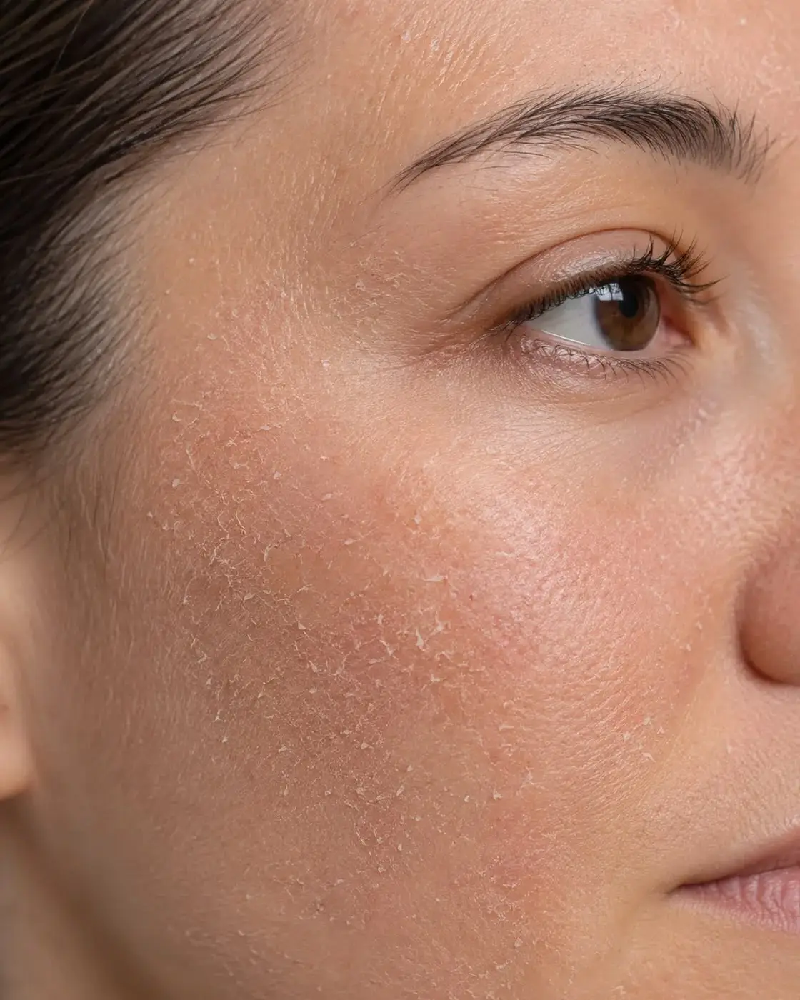

What is Dry Skin?
Dry skin is a skin type that produces less natural sebum (oil) than normal skin. Sebum is essential for maintaining the skin's moisture and protecting it from environmental damage. When the skin lacks enough oil, it struggles to retain water, causing the skin barrier to become weak and allowing moisture to escape more easily.
People with dry skin often experience tightness, roughness, and flaking, especially after cleansing or during cold and dry weather. Without proper care, dry skin can become irritated, sensitive, and more prone to developing fine lines and cracks.
Although dry skin is a natural skin type, it can also be worsened by factors such as aging, hot showers, harsh skincare products, low humidity, and prolonged sun exposure.
Main Characteristics & Common Concerns
Tight Feeling
Feels tight or uncomfortable, particularly after washing the face because natural oils have been removed.
Rough and Flaky Texture
May appear rough, dull, flaky, or peeling due to a lack of moisture and lipids.
Redness and Sensitivity
A weakened skin barrier makes dry skin more susceptible to redness, irritation, itching, and environmental stress.
Fine Lines from Dehydration
Insufficient hydration can make fine lines and wrinkles appear more noticeable, even in younger skin.
Dull Appearance
Often lacks the healthy glow seen in well-hydrated skin and may look tired or uneven.
Recommended Active Ingredients
Hyaluronic Acid
Attracts and retains water, keeping skin hydrated and plump.
Glycerin
Draws moisture into skin while improving softness and preventing dehydration.
Ceramides
Restore and strengthen the natural barrier, reducing moisture loss.
Shea Butter
Rich emollient that nourishes, locks in moisture, and relieves rough patches.
Squalane
Provides lightweight moisture while improving softness without clogging pores.
Panthenol (B5)
Soothes irritation, promotes skin repair, and enhances hydration.
Common Causes
- Low natural oil (sebum) production
- Cold or dry weather conditions
- Hot showers or frequent washing
- Harsh soaps and alcohol-based skincare products
- Aging, which naturally reduces oil production
- Air conditioning or indoor heating
- Certain skin conditions such as eczema
Ingredients to Avoid
If you have dry skin, avoid or limit products containing:
- High concentrations of Alcohol Denat.
- Strong sulfates (SLS/SLES)
- Harsh physical scrubs
- Overuse of Salicylic Acid
- High concentrations of Benzoyl Peroxide without moisturizer
- Fragrance-heavy products if your skin is sensitive
Daily Skincare Routine for Dry Skin
Morning Routine
- Gentle hydrating cleanser
- Hyaluronic Acid serum
- Moisturizer with Ceramides or Shea Butter
- Sunscreen (SPF 30 or higher)
Evening Routine
- Gentle cleanser
- Hydrating serum
- Rich moisturizer or nourishing night cream
- Facial oil (optional for extra hydration)
Tips for Healthy Dry Skin
- Drink enough water throughout the day.
- Avoid very hot showers.
- Apply moisturizer immediately after cleansing while skin is damp.
- Use a humidifier in dry environments.
- Choose fragrance-free skincare products.
- Wear sunscreen every day to protect the skin barrier.